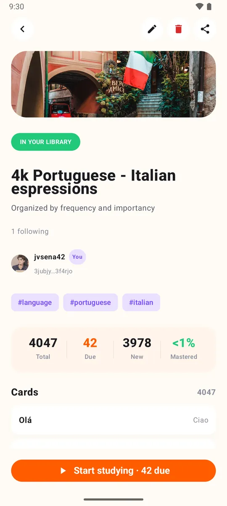

Any source
A chapter, lecture notes, a word list or a TV episode.
AI flashcard maker
Tell Claude, ChatGPT or Gemini what you want to learn. It writes the cards and publishes the deck to your phone.
Free. No ads. Open source.
A chapter, lecture notes, a word list or a TV episode.
Every card is checked before anything is written.
It manages decks. It can never post, follow or edit your profile.
Agents read real results instead of guessing.
Paste this into your AI agent and fill in the topic. You approve the login on your phone.
Build me a Loopky flashcard deck with the Loopky CLI.
Topic: <WHAT I WANT TO LEARN>
Cards: <HOW MANY>
Steps:
1. Install the CLI if it is missing:
curl -fsSL https://github.com/jvsena42/loopky/releases/latest/download/install.sh | sh
Windows: irm https://github.com/jvsena42/loopky/releases/latest/download/install.ps1 | iex
2. Read the command surface first: loopky commands --json
3. Log in: loopky login
It prints a QR code. I approve it in Pubky Ring on my phone.
4. Write the cards to cards.tsv, one card per line:
front <TAB> back
Two more columns are optional: an https image URL for each side.
5. Check before you write anything:
loopky deck create --title "<TITLE>" --from-file cards.tsv --dry-run --json
6. Publish it:
loopky deck create --title "<TITLE>" --tag <TOPIC> --from-file cards.tsv
Language deck: add --front-lang en-US --back-lang es-ES --listen --speak
7. Show me the result: loopky deck show <deckId> --json
I already have an Anki file? Import it instead:
loopky import deck.apkg --dry-run --json
loopky import deck.apkg --title "<TITLE>"
Rules:
- Every command takes --json, and the result sits under "data".
- Always run --dry-run before a command that writes.
- Image URLs must be https, and no SVG or TIFF. Those do not render.
- Do not invent cards I did not ask for. Show me the list before publishing.The deck shows up in Loopky, ready for spaced repetition, with audio for language decks. Check AI written cards for mistakes.

Windows, macOS and Linux, plus Homebrew, a .deb package and Docker. No Java, no setup.
No. Paste the prompt into an AI agent with a terminal, such as Claude Code, Codex or Gemini CLI. It runs the commands.
Yes. loopky import deck.apkg imports an Anki package, and --dry-run shows the result first.
It cannot post, follow people or edit your profile. It only manages decks and cards.
A few minutes a day is enough.